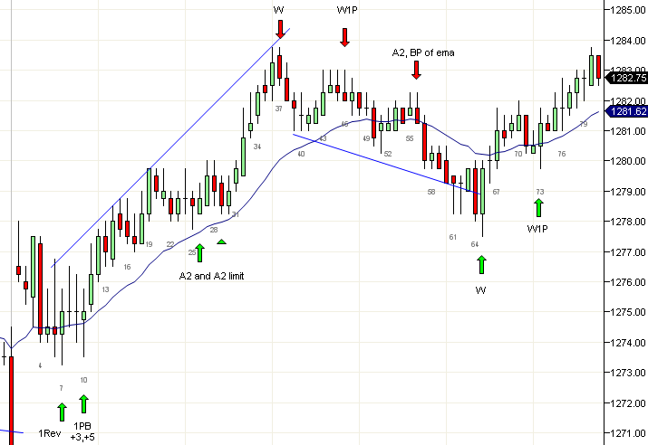

判断延续与反转
https://ninetrans.blogspot.com/2011/01/determining-continuation-versus.html

经常你可能问自己趋势是否真的结束了，还是这只是一个回撤。如果是回撤，它会是单腿、两腿还是三腿回撤。或者也许它是下行通道。
例如在今天的图表中，b25是两腿回撤还是b19、b24是我们应该卖出的双顶？答案很简单。在没有趋势线突破或趋势通道线超调的情况下，始终假设趋势仍在继续，顺势交易。大幅重叠使得难以在b25或b30上方采取价格行为入场。一个选择是在信号K线（这里是b25或b26）上方买入，允许一次回撤跌破你的入场K线。你也可以在预期的回撤处买入部分头寸，即在双K线b27、b28下方。
另一方面b46呢？那是W1P还是只是到EMA（最终在b51）的两腿行情中的一腿上行？每当你问自己这是否是W时，你应该问这是否在任何方面是极端行情。从b31到b37确实是急剧行情，触及了趋势通道线，但没有展示W反转的迹象。
- 没有极端超调。
- 没有反转K线
- 入场K线b38实际上没有触发b36下方的理论入场。
它确实是第三次向上推升，有微型趋势通道线超调，所以这仍然可能像边缘W1P一样工作。通常当信号模糊时，你可能只会得到深度回撤或趋势线突破，就像今天这样。参与较弱的W1P进行剥头皮或等待下一笔入场完全可以。
B56给出了两腿突破回踩做空...